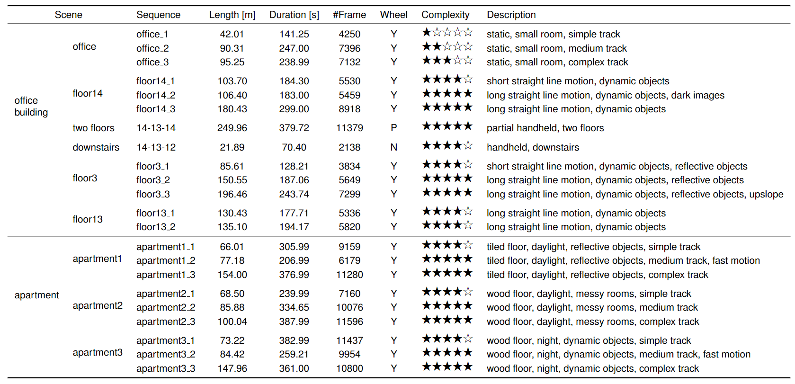
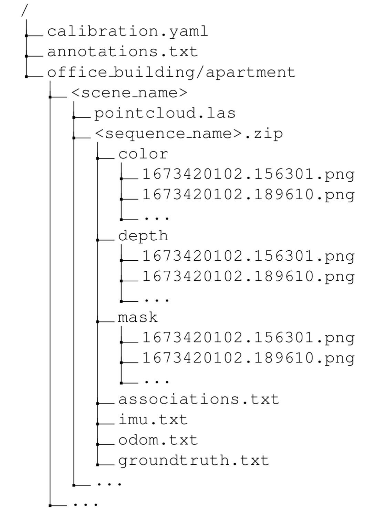

Sequences
Statistics


Office Building
We collect 13 sequences in typical office building environments, which cover 6 different scenes. These sequences are captured during the day with windows and daylight appearing a few times. Sequences in floor scenes are more challenging because of insufficient rotation and weak textures.
Apartment
We recorded 9 sequences in real living environments, which cover 3 different apartments. The apartments are about 10m × 10m, including a living room, two or three bedrooms, a bathroom and a kitchen. The rooms are cluttered with small and unstructured obstacles. Sequences in apartment scenes contain rich loops and rotational motions. There are also special situations such as motion blur, weak texture and reflective objects
Dataset Format
We provide spatiotemporally aligned data and ground truth trajectories for every sequence as well as pre- cise 3D point cloud models for each scene. Addition- ally, extrinsic and intrinsic calibration parameters are provided in a .yaml file. The data is organized as follows.
